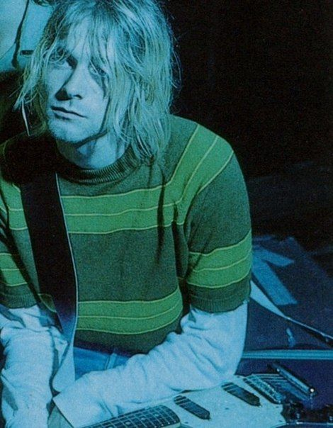
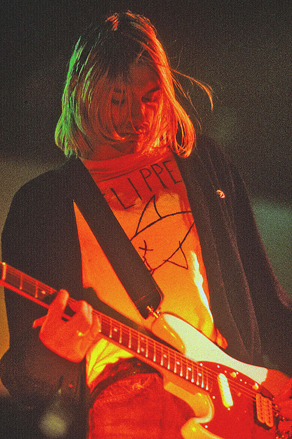
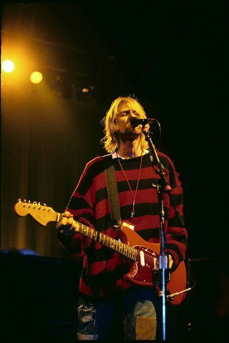
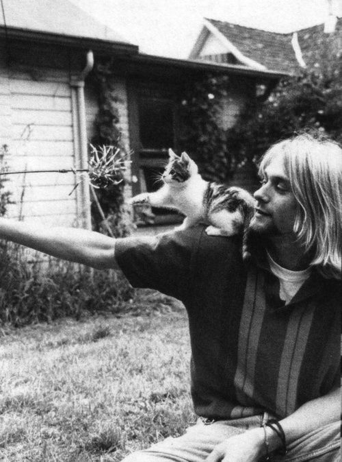
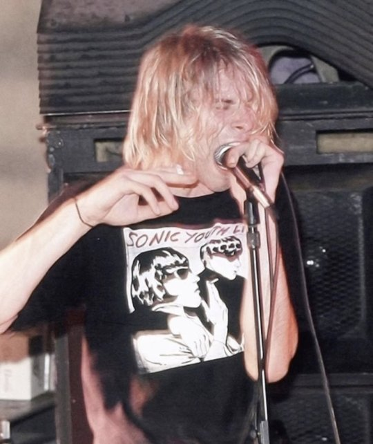
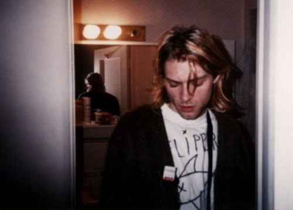
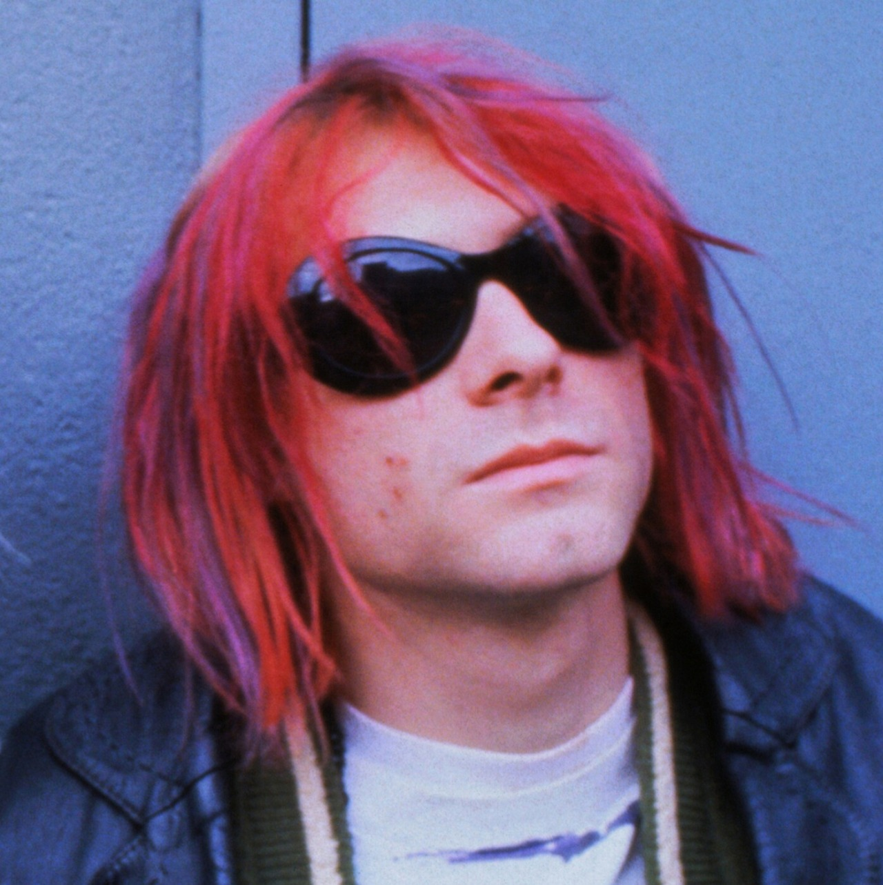

Kurt Donald Cobain was an American musician who served as the lead vocalist, guitarist and
primary songwriter of the rock band Nirvana.
Through his angst-fueled songwriting and anti-
establishment persona, Cobain's compositions widened the thematic conventions of mainstream rock.







Click here to know more about Kurt Cobain